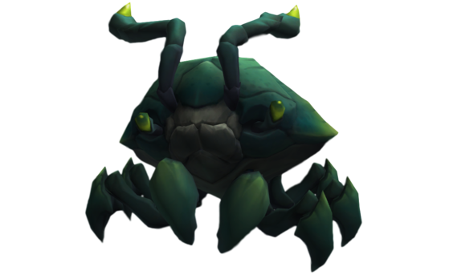

voici le clear de Fiddlesticks
Le clear et un fondamentale de la jungle. Il permet de gagner des gold (l'argent
dans le jeu) et des niveaux (grâce a l'xp récupéré sur les
différents monstre de la jungle).
De plus le
clear est a maitriser car il faut le finir avant 3 min 30s car un nouveau monstre apparait a ce moment
là. Il s'agit du redoutable
carapateur !
Le clear de Fiddlesticks est l'un des plus compliquer mais une fois
maitrisé c'est l'un des plus efficaces.
